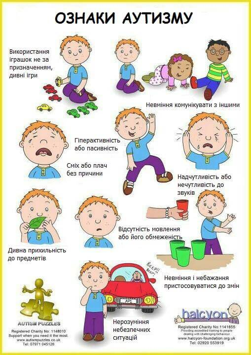

╔═══❖•ೋ° АУТИЗМ °ೋ•❖═══╗
Ця тема стала більш важливою чим колись, тут ви прочитаєте детальніше про аутизм у дитини, як його побачити на ранніх етапах життя малюка та інші важливі моменти.
Аутизм — це особлива форма розвитку, що впливає на комунікацію, поведінку та сприйняття навколишнього світу. У цьому розділі ти дізнаєшся про основні прояви,
які можуть допомогти виявити перші ознаки,
а також отримаєш поради щодо ефективної взаємодії з дитиною та способів підтримки її розвитку без зайвого напруження.
『✦』Як виявити аутизм на ранніх етапах життя дитини
Ранній дитячий аутизм є унікальною особливістю психічного розвитку, що проявляється у специфічних і стійких порушеннях комунікації, емоційного взаємозв’язку дитини з навколишнім середовищем та здатності адекватно реагувати на зовнішні обставини.
Головна риса аутизму — труднощі в налагодженні контакту — зазвичай стає помітною вже в перший рік життя, але найбільш яскраво виявляється у віці 2-3 років, під час першого етапу вікової кризи.
З клінічної точки зору, ранній дитячий аутизм є одним із найскладніших порушень розвитку. У поведінці дітей із цим розладом помітна байдужість або захисна реакція на звичні спроби встановлення контакту та спілкування.
Також для них характерна тривожно-залежна прив’язаність до певних щоденних ритуалів і процедур, однобокі, самостимульовані поведінкові підходи, недостатній розвиток засобів вираження емоцій і комунікації (мови, міміки) та неспроможність адаптуватися до практичних життєвих вимог.
Зоровий контакт
Якщо шестимісячна дитина уникає прямого зорового контакту з батьками або взагалі його не встановлює, це може бути сигналом про необхідність консультації з фахівцем. Лікарі також зазначають, що діти з аутизмом часто дивляться не в очі, а на рот співрозмовника.
Емоції
Діти із розладом аутистичного спектру не наслідують емоційні реакції дорослих. Наприклад, у той час як здорові немовлята вже у віці близько дев’яти місяців починають повторювати за батьками посмішки чи певні звуки, діти з аутизмом залишаються емоційно відчуженими.
Реакція на звертання
Якщо дитина до року не реагує на своє ім’я та не демонструє бажання комунікувати з батьками, це може свідчити про наявність розладу. Крім того, маленькі діти з аутизмом рідко використовують жест вказування для позначення бажаних предметів чи дій.
Мовлення
До 16 місяців малюки зазвичай починають вимовляти окремі слова чи звуки, а до двох років формують прості двослівні фрази. Проте діти із РАС частіше обмежуються окремими словами, такими як «пити», «їсти» чи «іграшка», вимовляючи їх монотонно і без адресації до співрозмовника.
Ритуальна поведінка
Характерною рисою дітей з РАС є схильність до стереотипних дій, які вони багаторазово повторюють. Зміна звичного ходу подій може викликати протест і сильне занепокоєння. Наприклад, у ранньому віці такою поведінкою може бути переливання води між ємностями або нав'язливе вмикання і вимикання світла. У такому захопленні дитина здатна провести тривалий час, і відволікти її буває дуже складно.
Розпізнати аутизм на ранніх етапах — завдання відповідальне і складне, але надзвичайно важливе. Основні ознаки, які можуть свідчити про розлади аутичного спектра у дитини, включають відсутність реакції на її ім’я чи звернення, ігнорування запитань, виражену емоційну пасивність і незацікавленість предметами довколишнього світу. Спостерігається також ізоляція від оточуючих — дитина ніби «замкнена» у власному світі. Додатково може виникати аномальна реакція на дотики, яка супроводжується плачем чи криком. Варто зазначити, що ранній дитячий аутизм іноді можна сплутати з іншими проблемами розвитку. Наприклад: 1. Сенсорні порушення - часто батьки та лікарі припускають у немовлят із аутизмом глухоту або сліпоту, адже такі діти можуть не реагувати на своє ім’я, не виконувати прохання дорослих і не концентруватися, навіть за їхньою допомогою.
2. Розумова відсталість - у двох із трьох дітей з аутизмом пам’ятливість оцінюється як низька під час стандартних психологічних тестів; значна частина таких дітей вважаються навіть глибоко розумово відсталими. Це зумовлює необхідність чіткого розмежування між цими станами.
3. Порушення мовленнєвого розвитку - часто саме незвичності у мовленні привертають увагу батьків: специфічна інтонація, часте повторення однакових фраз (ехолалія), плутанина із займенниками або використання стереотипних словесних штампів.
4. Шизофренія - у рідкісних випадках виникає необхідність чітко розрізняти дитячий аутизм і шизофренію, оскільки обидва стани можуть мати певні спільні прояви. Неправильна діагностика може викликати не лише додаткові професійні труднощі, а й серйозний стрес у сім’ї.
5. Соціальні фактори та умови виховання - порушення комунікації в ранньому віці може виникнути через відсутність належного емоційного контакту з дорослими, наприклад у випадках дитячого госпіталізму чи недостатньої уваги до дитини вдома. У таких обставинах нерідко спостерігаються затримки психічного розвитку і стереотипна поведінка, яка компенсує брак взаємодії зі світом. Іншою причиною може бути негативний досвід взаємодії дитини з оточуючим середовищем, як-от психологічні травми чи труднощі інтеграції у колективі.
Відмінність дитячого аутизму полягає в тому, що порушення комунікації має глобальний характер. Особливо складно дітям з аутизмом встановлювати ігрові зв’язки з однолітками — вони уникають таких контактів та часто не можуть організувати гру навіть у мінімальному форматі.
Рання діагностика та вчасна допомога — ключові чинники у покращенні розвитку дитини з аутизмом. Саме своєчасне втручання психолого-педагогів допомагає значно вирівняти деякі аспекти труднощів та відкриває можливості для адаптації в соціумі.
Стосунки дитини з навколишнім світом зазнають значних змін через порушення довільного та мимовільного спілкування. Перший сигнал для батьків — відсутність зорового контакту. Малюк з аутизмом не прагне дивитися в очі дорослим, не підтягує до них ручки з проханням взяти його на руки, як це роблять звичайні діти вже на перших етапах соціально-емоційного розвитку
Дитинство – це час відкриттів, радощів і постійного контакту зі світом, однак для дітей із аутизмом цей період проходить зовсім інакше. У них кожен етап розвитку спілкування має свою унікальність, яка виділяє їх серед інших. Наприклад, навіть найменші дітки із таким діагнозом здебільшого не використовують міміку чи жести як засіб комунікації, що є природним для більшості немовлят та дітей з іншими розладами, наприклад слуху чи мови. Це пов’язано з характерною для аутизму особливістю – прагненням уникати соціальних контактів. Дитина з аутизмом часто здається замкненою у своєму світі. Вона може майже не дивитися на інших, ігнорувати присутність близьких людей і поводитися так, ніби вони — частина меблів. Але водночас такі дітки мають високий рівень емоційної чутливості. Їхні реакції на оточення можуть бути непередбачуваними і навіть парадоксальними. Наприклад, малеча може не помітити відсутності когось із батьків, але дуже тривожно реагувати на перестановку улюблених предметів у кімнаті. Особливу специфіку має й ігрова діяльність дітей з аутизмом. Переважно вони обирають гри на самоті, і їхній інтерес рідко спрямований на звичайні іграшки. Замість них улюбленими "друзями" стають побутові предмети: взуття, шнурки, шматочки паперу, вимикачі чи навіть дроти. Найчастіше ці ігри монотонні та тривають дуже довго. Групові або рольові ігри з іншими дітьми розвиваються рідко, а якщо такі моменти і трапляються, то переплітаються зі своєрідними фантазіями й однобоким перевтіленням у певні образи. При цьому дитина зазвичай ігнорує оточення та уникає вербального спілкування.
Ще одним аспектом, який привертає увагу, є порушення моторики. У деяких дітей проявляється загальна моторна слабкість, тоді як в інших – схильність до стереотипних рухів: розгинання пальців рук, махання кистями або бігання навшпиньки. Особливо характерними є кругові рухи руками біля куточків очей — вони можуть посилюватися під час хвилювання або спонукання до контакту. Міміка таких дітей здебільшого невиразна, а їхній погляд часто спрямований "крізь" співрозмовника. Серед поширених рис також виділяється підвищена чутливість до подразників, страх новизни й невідомості, що нерідко коріняться в інстинктивній потребі самозбереження. Тому непередбачувані зміни або нові ситуації можуть викликати у дитини сильний неспокій.
Щодо інтелектуального розвитку дітей з аутизмом, він рідко буває однотипним. Діти можуть мати як нормальний чи навіть пришвидшений розвиток інтелектуальних здібностей, так і відставання чи нерівномірний прогрес у різних сферах. Іноді можна помітити виняткову обдарованість в обраних напрямах — наприклад, у музиці чи малюванні — тоді як в інших галузях виявляється значне відставання від вікової норми. Прийняття та розуміння особливостей дитини з аутизмом є першим кроком до створення середовища, де вона зможе максимально розкрити свій потенціал. Це нелегкий шлях як для родини, так і для суспільства загалом, але правильний підхід, толерантність і підтримка дозволяють створити умови для щасливого і всебічного розвитку таких діток.
Ранній дитячий аутизм — складне порушення розвитку, яке нерідко ставить перед батьками і фахівцями непрості виклики. Одним із його ключових проявів є проблеми з мовленням, які демонструють особливості комунікативної поведінки дитини. У таких випадках мова перестає бути засобом спілкування: дітки рідко ініціюють діалог, майже не відповідають на запитання, навіть якщо їх задають близькі люди. Натомість у них може виникати так звана "автономна мова" — коли дитина розмовляє сама з собою. Серед специфічних мовних проявів при аутизмі можна відзначити ехолалії — повторення почутих слів та фраз, незвичну інтонацію, своєрідність вимови, порушення голосу та фонетики. Наприклад, кінець фрази або слова часто виголошується особливо високим тоном. Дитина може довго називати себе в другій чи третій особі, а в її активному словнику часто відсутні емоційно навантажені слова, як-от «мама» чи «тато», а також назви предметів, які для неї мають особливий сенс — наприклад, ті, що викликають страх чи сильний інтерес. Слід відзначити, що на початковому етапі розвитку мовлення у дітей з аутизмом воно може бути цілком нормальним або навіть швидшим за однолітків. Однак з часом, зазвичай до 30 місяців (частіше — близько 18), спостерігається поступова втрата цієї навички. Дитина перестає спілкуватися з іншими і може обмежитися тільки монологами або розмовами уві сні. Втрата мовлення супроводжується зменшенням використання жестів і відсутністю імітаційної поведінки. Цікаво, що такі прояви частіше зустрічаються у дівчаток.
На етапі до появи мовлення також помітне відхилення: відсутність лепетання або слабкий розвиток наслідувально-повторювальних функцій. Навіть якщо дитина, здається, розуміє сказане їй, вона не реагує на прості мовні команди. У більшості дітей із раннім дитячим аутизмом (понад 50-70%) спостерігається недостатність жестів та інтонацій у спілкуванні. Ехолалії у перші роки життя зустрічаються рідко, але можуть посилюватися в старшому дошкільному віці. При цьому використання повноцінної мови в комунікації залишається значно обмеженим. У знайомому середовищі дітям може бути комфортніше спілкуватися, проте за його межами вони роблять це вкрай рідко та нерідко припускаються граматичних помилок. Особливо характерними є проблеми зі словами «я» та «так», які уникаються або замінюються іншими формами.
Іноді аутизм ускладнюється додатковими мовними порушеннями. На жаль, такі комбінації можуть значно поглибити труднощі розвитку мовлення, оскільки проблеми взаємно посилюють одна одну. Наприклад, поєднання аутизму з алалією — серйозним розладом мови — вимагає особливого підходу та уваги з боку професіоналів. У важких випадках мовні і слухові порушення можуть стати підґрунтям для повторного формування різних варіантів аутичної поведінки. Саме тому так важливо здійснювати точну клінічну диференціацію стану кожної дитини. Це не лише допомагає уникнути хибних діагнозів, а й дозволяє вчасно запобігти розвитку більш серйозних психічних захворювань, таких як дитяча шизофренія.
Тому, якщо помічаєте будь-які відхилення в розвитку дитини, найважливіше — не ігнорувати проблему, не чекати, що вона мине сама собою, і точно не відчувати сорому. Натомість найкраще рішення — звернутися по допомогу до фахівців.

Термін "аутизм" (походить від грецького слова "autos") був вперше введений у практику швейцарським психіатром Лео Каннером у 1943 році. Саме він докладно описав стан, відомий нині як ранній дитячий аутизм (РДА). Втім, систематичні дослідження у цій сфері почали проводитися відносно недавно. Ранній дитячий аутизм інколи проявляється вже в перші місяці або рік життя. Серед типових особливостей можна відзначити те, що деякі немовлята відмовляються йти на контакт із матір’ю, демонструють обмежену соціальну взаємодію і надають перевагу спостереженню за неживими об’єктами. Мовленнєвий розвиток або значно уповільнений, або взагалі майже відсутній. Така дитина часто не сприймає змін у звичному оточенні та може виражати сильне занепокоєння або агресію в подібних ситуаціях. Інтелектуальні особливості можуть варіюватися: від нормального розвитку до повільнішого чи навіть нерівномірного прогресу.Як розпізнати аутизм?
Розлад зазвичай починає проявлятися до трирічного віку. Основні особливості включають труднощі в соціальних контактах та обмежене коло інтересів. Як показує практика, чим раніше розпочати реабілітацію — вже у віці півтора-двох років — тим ефективнішою вона буде. Навпаки, затримка в зверненні до фахівців суттєво знижує шанси дитини на успішну соціалізацію. Тому важливо мати на увазі ранні ознаки розладу.Зоровий контакт
Якщо шестимісячна дитина уникає прямого зорового контакту з батьками або взагалі його не встановлює, це може бути сигналом про необхідність консультації з фахівцем. Лікарі також зазначають, що діти з аутизмом часто дивляться не в очі, а на рот співрозмовника.
Емоції
Діти із розладом аутистичного спектру не наслідують емоційні реакції дорослих. Наприклад, у той час як здорові немовлята вже у віці близько дев’яти місяців починають повторювати за батьками посмішки чи певні звуки, діти з аутизмом залишаються емоційно відчуженими.
Реакція на звертання
Якщо дитина до року не реагує на своє ім’я та не демонструє бажання комунікувати з батьками, це може свідчити про наявність розладу. Крім того, маленькі діти з аутизмом рідко використовують жест вказування для позначення бажаних предметів чи дій.
Мовлення
До 16 місяців малюки зазвичай починають вимовляти окремі слова чи звуки, а до двох років формують прості двослівні фрази. Проте діти із РАС частіше обмежуються окремими словами, такими як «пити», «їсти» чи «іграшка», вимовляючи їх монотонно і без адресації до співрозмовника.
Ритуальна поведінка
Характерною рисою дітей з РАС є схильність до стереотипних дій, які вони багаторазово повторюють. Зміна звичного ходу подій може викликати протест і сильне занепокоєння. Наприклад, у ранньому віці такою поведінкою може бути переливання води між ємностями або нав'язливе вмикання і вимикання світла. У такому захопленні дитина здатна провести тривалий час, і відволікти її буває дуже складно.
Розпізнати аутизм на ранніх етапах — завдання відповідальне і складне, але надзвичайно важливе. Основні ознаки, які можуть свідчити про розлади аутичного спектра у дитини, включають відсутність реакції на її ім’я чи звернення, ігнорування запитань, виражену емоційну пасивність і незацікавленість предметами довколишнього світу. Спостерігається також ізоляція від оточуючих — дитина ніби «замкнена» у власному світі. Додатково може виникати аномальна реакція на дотики, яка супроводжується плачем чи криком. Варто зазначити, що ранній дитячий аутизм іноді можна сплутати з іншими проблемами розвитку. Наприклад: 1. Сенсорні порушення - часто батьки та лікарі припускають у немовлят із аутизмом глухоту або сліпоту, адже такі діти можуть не реагувати на своє ім’я, не виконувати прохання дорослих і не концентруватися, навіть за їхньою допомогою.
2. Розумова відсталість - у двох із трьох дітей з аутизмом пам’ятливість оцінюється як низька під час стандартних психологічних тестів; значна частина таких дітей вважаються навіть глибоко розумово відсталими. Це зумовлює необхідність чіткого розмежування між цими станами.
3. Порушення мовленнєвого розвитку - часто саме незвичності у мовленні привертають увагу батьків: специфічна інтонація, часте повторення однакових фраз (ехолалія), плутанина із займенниками або використання стереотипних словесних штампів.
4. Шизофренія - у рідкісних випадках виникає необхідність чітко розрізняти дитячий аутизм і шизофренію, оскільки обидва стани можуть мати певні спільні прояви. Неправильна діагностика може викликати не лише додаткові професійні труднощі, а й серйозний стрес у сім’ї.
5. Соціальні фактори та умови виховання - порушення комунікації в ранньому віці може виникнути через відсутність належного емоційного контакту з дорослими, наприклад у випадках дитячого госпіталізму чи недостатньої уваги до дитини вдома. У таких обставинах нерідко спостерігаються затримки психічного розвитку і стереотипна поведінка, яка компенсує брак взаємодії зі світом. Іншою причиною може бути негативний досвід взаємодії дитини з оточуючим середовищем, як-от психологічні травми чи труднощі інтеграції у колективі.
Відмінність дитячого аутизму полягає в тому, що порушення комунікації має глобальний характер. Особливо складно дітям з аутизмом встановлювати ігрові зв’язки з однолітками — вони уникають таких контактів та часто не можуть організувати гру навіть у мінімальному форматі.
Рання діагностика та вчасна допомога — ключові чинники у покращенні розвитку дитини з аутизмом. Саме своєчасне втручання психолого-педагогів допомагає значно вирівняти деякі аспекти труднощів та відкриває можливості для адаптації в соціумі.
Стосунки дитини з навколишнім світом зазнають значних змін через порушення довільного та мимовільного спілкування. Перший сигнал для батьків — відсутність зорового контакту. Малюк з аутизмом не прагне дивитися в очі дорослим, не підтягує до них ручки з проханням взяти його на руки, як це роблять звичайні діти вже на перших етапах соціально-емоційного розвитку
Дитинство – це час відкриттів, радощів і постійного контакту зі світом, однак для дітей із аутизмом цей період проходить зовсім інакше. У них кожен етап розвитку спілкування має свою унікальність, яка виділяє їх серед інших. Наприклад, навіть найменші дітки із таким діагнозом здебільшого не використовують міміку чи жести як засіб комунікації, що є природним для більшості немовлят та дітей з іншими розладами, наприклад слуху чи мови. Це пов’язано з характерною для аутизму особливістю – прагненням уникати соціальних контактів. Дитина з аутизмом часто здається замкненою у своєму світі. Вона може майже не дивитися на інших, ігнорувати присутність близьких людей і поводитися так, ніби вони — частина меблів. Але водночас такі дітки мають високий рівень емоційної чутливості. Їхні реакції на оточення можуть бути непередбачуваними і навіть парадоксальними. Наприклад, малеча може не помітити відсутності когось із батьків, але дуже тривожно реагувати на перестановку улюблених предметів у кімнаті. Особливу специфіку має й ігрова діяльність дітей з аутизмом. Переважно вони обирають гри на самоті, і їхній інтерес рідко спрямований на звичайні іграшки. Замість них улюбленими "друзями" стають побутові предмети: взуття, шнурки, шматочки паперу, вимикачі чи навіть дроти. Найчастіше ці ігри монотонні та тривають дуже довго. Групові або рольові ігри з іншими дітьми розвиваються рідко, а якщо такі моменти і трапляються, то переплітаються зі своєрідними фантазіями й однобоким перевтіленням у певні образи. При цьому дитина зазвичай ігнорує оточення та уникає вербального спілкування.
Ще одним аспектом, який привертає увагу, є порушення моторики. У деяких дітей проявляється загальна моторна слабкість, тоді як в інших – схильність до стереотипних рухів: розгинання пальців рук, махання кистями або бігання навшпиньки. Особливо характерними є кругові рухи руками біля куточків очей — вони можуть посилюватися під час хвилювання або спонукання до контакту. Міміка таких дітей здебільшого невиразна, а їхній погляд часто спрямований "крізь" співрозмовника. Серед поширених рис також виділяється підвищена чутливість до подразників, страх новизни й невідомості, що нерідко коріняться в інстинктивній потребі самозбереження. Тому непередбачувані зміни або нові ситуації можуть викликати у дитини сильний неспокій.
Щодо інтелектуального розвитку дітей з аутизмом, він рідко буває однотипним. Діти можуть мати як нормальний чи навіть пришвидшений розвиток інтелектуальних здібностей, так і відставання чи нерівномірний прогрес у різних сферах. Іноді можна помітити виняткову обдарованість в обраних напрямах — наприклад, у музиці чи малюванні — тоді як в інших галузях виявляється значне відставання від вікової норми. Прийняття та розуміння особливостей дитини з аутизмом є першим кроком до створення середовища, де вона зможе максимально розкрити свій потенціал. Це нелегкий шлях як для родини, так і для суспільства загалом, але правильний підхід, толерантність і підтримка дозволяють створити умови для щасливого і всебічного розвитку таких діток.
Ранній дитячий аутизм — складне порушення розвитку, яке нерідко ставить перед батьками і фахівцями непрості виклики. Одним із його ключових проявів є проблеми з мовленням, які демонструють особливості комунікативної поведінки дитини. У таких випадках мова перестає бути засобом спілкування: дітки рідко ініціюють діалог, майже не відповідають на запитання, навіть якщо їх задають близькі люди. Натомість у них може виникати так звана "автономна мова" — коли дитина розмовляє сама з собою. Серед специфічних мовних проявів при аутизмі можна відзначити ехолалії — повторення почутих слів та фраз, незвичну інтонацію, своєрідність вимови, порушення голосу та фонетики. Наприклад, кінець фрази або слова часто виголошується особливо високим тоном. Дитина може довго називати себе в другій чи третій особі, а в її активному словнику часто відсутні емоційно навантажені слова, як-от «мама» чи «тато», а також назви предметів, які для неї мають особливий сенс — наприклад, ті, що викликають страх чи сильний інтерес. Слід відзначити, що на початковому етапі розвитку мовлення у дітей з аутизмом воно може бути цілком нормальним або навіть швидшим за однолітків. Однак з часом, зазвичай до 30 місяців (частіше — близько 18), спостерігається поступова втрата цієї навички. Дитина перестає спілкуватися з іншими і може обмежитися тільки монологами або розмовами уві сні. Втрата мовлення супроводжується зменшенням використання жестів і відсутністю імітаційної поведінки. Цікаво, що такі прояви частіше зустрічаються у дівчаток.
На етапі до появи мовлення також помітне відхилення: відсутність лепетання або слабкий розвиток наслідувально-повторювальних функцій. Навіть якщо дитина, здається, розуміє сказане їй, вона не реагує на прості мовні команди. У більшості дітей із раннім дитячим аутизмом (понад 50-70%) спостерігається недостатність жестів та інтонацій у спілкуванні. Ехолалії у перші роки життя зустрічаються рідко, але можуть посилюватися в старшому дошкільному віці. При цьому використання повноцінної мови в комунікації залишається значно обмеженим. У знайомому середовищі дітям може бути комфортніше спілкуватися, проте за його межами вони роблять це вкрай рідко та нерідко припускаються граматичних помилок. Особливо характерними є проблеми зі словами «я» та «так», які уникаються або замінюються іншими формами.
Іноді аутизм ускладнюється додатковими мовними порушеннями. На жаль, такі комбінації можуть значно поглибити труднощі розвитку мовлення, оскільки проблеми взаємно посилюють одна одну. Наприклад, поєднання аутизму з алалією — серйозним розладом мови — вимагає особливого підходу та уваги з боку професіоналів. У важких випадках мовні і слухові порушення можуть стати підґрунтям для повторного формування різних варіантів аутичної поведінки. Саме тому так важливо здійснювати точну клінічну диференціацію стану кожної дитини. Це не лише допомагає уникнути хибних діагнозів, а й дозволяє вчасно запобігти розвитку більш серйозних психічних захворювань, таких як дитяча шизофренія.
Тому, якщо помічаєте будь-які відхилення в розвитку дитини, найважливіше — не ігнорувати проблему, не чекати, що вона мине сама собою, і точно не відчувати сорому. Натомість найкраще рішення — звернутися по допомогу до фахівців.
· . * .. . °·. · ✦ ·* . • · •. ✶˚ . ·*✧* ˚ · . ·* . ✵. ✧✵ .· ✵ ✫˚ · · .
✦ ˚
『✦』Ступені аутизму
Класифікація дитячого аутизму: як розібратися у різновидах діагнозу
Дитячий аутизм — складний стан, який потребує правильного підходу в діагностиці та лікуванні. Для цього важливо розуміти різноманітність форм і видів, що включаються в цей діагноз. Сьогодні існують два основні типи класифікації, які допомагають лікарям об'єктивно оцінювати симптоми та надавати індивідуалізовану допомогу дітям з аутизмом. Основні міжнародні класифікації
Ця система була розроблена Всесвітньою організацією охорони здоров’я (ВООЗ) і наразі є базовою у визначенні дитячого аутизму. Вона орієнтована на клінічну симптоматику і присвоєння кодів кожному стану. Наприклад, узагальнений код дитячого аутизму — **F 84.0**. Проте захворювання поділяється на кілька підвидів, кожен з яких має окремий код:
- Нетиповий аутизм
- Синдром Аспергера
- Розлади, подібні до дитячого аутизму
- Синдром Ретта
- Розлади, що проявляються розумовою відсталістю та стереотипними рухами
- Первазивні неспецифічні порушення
Ця класифікація була представлена Американською психіатричною асоціацією й дещо відрізняється своїми кодами, хоча за змістом вона багато в чому схожа на МКХ-10. У ній виділяють такі різновиди дитячого аутизму:
- Синдром Ретта
- Синдром Аспергера
- Атиповий аутизм (первазивне порушення розвитку)
- Дезінтегративний розлад дитячого віку
Ці дві міжнародні системи класифікації є основоположними для визначення діагнозу, але не єдині. Психологічна класифікація Нікольської
Крім медичних систем, існує ще й психологічна класифікація, запропонована О.С. Нікольською. Вона базується на аналізі поведінкових і емоційних особливостей дитини та виділяє чотири групи залежно від провідних рис їхнього сприйняття світу:
1. Замкнутість: практично повна відсутність потреби у контактах із зовнішнім світом
2. Негативізм: активне заперечення оточуючої реальності і надмірна збудливість
3. Заміщення середовища: небажання встановлювати емоційні зв'язки навіть з близькими людьми
4. Боязкість і вразливість: страх перед взаємодією з реальністю, сильна внутрішня чутливість
Ця система показала свою ефективність у розробці психологічних програм для реабілітації дітей з аутизмом
На сьогодні не можна повністю вилікувати аутизм, але сучасна медицина пропонує прогресивні методики терапії. Одним із передових підходів є застосування власних стовбурових клітин, отриманих із пуповинної крові або кісткового мозку. Така методика вже успішно використовується, наприклад, у клініці Мардалейшвілі в Грузії.
Правильне визначення виду аутизму відіграє вирішальну роль у виборі відповідного методу корекції та терапії. Особливо це важливо при ранньому дитячому аутизмі, коли своєчасне втручання дозволяє значно поліпшити якість життя дитини та її соціальну адаптацію
· . * .. . °·. · ✦ ·* . • · •. ✶˚ . ·*✧* ˚ · . ·* . ✵. ✧✵ .· ✵ ✫˚ · · . Дитячий аутизм — складний стан, який потребує правильного підходу в діагностиці та лікуванні. Для цього важливо розуміти різноманітність форм і видів, що включаються в цей діагноз. Сьогодні існують два основні типи класифікації, які допомагають лікарям об'єктивно оцінювати симптоми та надавати індивідуалізовану допомогу дітям з аутизмом. Основні міжнародні класифікації
МКХ-10
Ця система була розроблена Всесвітньою організацією охорони здоров’я (ВООЗ) і наразі є базовою у визначенні дитячого аутизму. Вона орієнтована на клінічну симптоматику і присвоєння кодів кожному стану. Наприклад, узагальнений код дитячого аутизму — **F 84.0**. Проте захворювання поділяється на кілька підвидів, кожен з яких має окремий код:
- Нетиповий аутизм
- Синдром Аспергера
- Розлади, подібні до дитячого аутизму
- Синдром Ретта
- Розлади, що проявляються розумовою відсталістю та стереотипними рухами
- Первазивні неспецифічні порушення
DSM-IV
Ця класифікація була представлена Американською психіатричною асоціацією й дещо відрізняється своїми кодами, хоча за змістом вона багато в чому схожа на МКХ-10. У ній виділяють такі різновиди дитячого аутизму:
- Синдром Ретта
- Синдром Аспергера
- Атиповий аутизм (первазивне порушення розвитку)
- Дезінтегративний розлад дитячого віку
Ці дві міжнародні системи класифікації є основоположними для визначення діагнозу, але не єдині. Психологічна класифікація Нікольської
Крім медичних систем, існує ще й психологічна класифікація, запропонована О.С. Нікольською. Вона базується на аналізі поведінкових і емоційних особливостей дитини та виділяє чотири групи залежно від провідних рис їхнього сприйняття світу:
1. Замкнутість: практично повна відсутність потреби у контактах із зовнішнім світом
2. Негативізм: активне заперечення оточуючої реальності і надмірна збудливість
3. Заміщення середовища: небажання встановлювати емоційні зв'язки навіть з близькими людьми
4. Боязкість і вразливість: страх перед взаємодією з реальністю, сильна внутрішня чутливість
Ця система показала свою ефективність у розробці психологічних програм для реабілітації дітей з аутизмом
Сучасні методи лікування
На сьогодні не можна повністю вилікувати аутизм, але сучасна медицина пропонує прогресивні методики терапії. Одним із передових підходів є застосування власних стовбурових клітин, отриманих із пуповинної крові або кісткового мозку. Така методика вже успішно використовується, наприклад, у клініці Мардалейшвілі в Грузії.
Чому класифікація важлива?
Правильне визначення виду аутизму відіграє вирішальну роль у виборі відповідного методу корекції та терапії. Особливо це важливо при ранньому дитячому аутизмі, коли своєчасне втручання дозволяє значно поліпшити якість життя дитини та її соціальну адаптацію
✦ ˚
『✦』Виховання дитини з аутизмом
Виховання дитини — це складний і відповідальний процес, що вимагає від батьків не лише терпіння і навчання базовим навичкам, а й уміння будувати взаємодію відповідно до вікових потреб. Однак, коли йдеться про дітей з аутизмом, цей процес набуває ще більшої складності й багатогранності. При такому діагнозі важливо знати особливі підходи, правила та обмеження, які допоможуть встановити гармонійний контакт із дитиною, створити сприятливі умови для її розвитку і сприяти розкриттю потенціалу.
Перші ознаки аутизму можуть проявитися вже в перший рік життя. Якщо немовля не тягнеться до мами, уникає уваги близьких, це може сигналізувати про можливі труднощі. Однак найбільш помітно характерні риси розладу аутичного спектра стають у віці від 2 до 3 років – саме тоді, коли дитина починає активно освоювати мову та соціальні навички.
Діти з аутизмом зосереджені переважно на своєму внутрішньому світі. Часто вони уникають спілкування з батьками чи однолітками. Їх може лякати увага незнайомців, прямий зоровий контакт і прості зовнішні подразники, такі як звук побутової техніки, яскраве світло або тварини.
Основні ознаки, які можуть свідчити про аутизм:
- Затримка мовленнєвого розвитку
- Невідповідна реакція на звертання по імені чи мову, адресовану дитині
- Стереотипна поведінка: повторення одних і тих самих рухів, дій чи тривалий інтерес до одного предмета
- Відсутність інтересу до навколишнього світу та подій, небажання гратися з іншими дітьми
- Малий інтерес до іграшок – натомість дитина може багаторазово виконувати монотонні дії, такі як перекручування шнурка чи смоктання предметів
- Труднощі або неможливість оволодіння базовими навичками самообслуговування — самостійний прийом їжі, одягання, користування туалетом чи столовими приборами
- Небажання встановлювати емоційний контакт
- Немотивовані напади агресії або гніву
- Відсутність почуття небезпеки – дитина може виходити на проїжджу частину, грати з гострими предметами чи стрибати з висоти
Виховання дитини з особливостями розвитку повинно ґрунтуватися на її унікальних потребах і здібностях. Важливо пам’ятати, що аутизм – це не наслідок недостатнього виховання. Це медичний стан, пов’язаний із порушеннями в роботі мозку, що впливає на комунікативні та соціальні навички.
Найголовніше для батьків – при перших підозрах звернутися до дитячого психоневролога чи психіатра. Лише фахівці можуть надати правильну оцінку стану дитини. Робота з лікарями та психологами, як і своєчасне призначення корекційних заходів, дають змогу значно мінімізувати прояви розладу та сприяють кращій соціальній адаптації дитини.
Виховання дитини з розладом аутичного спектру – це непростий, але водночас надзвичайно важливий і натхненний процес. Перший і найважливіший крок для батьків – це прийняття ситуації, розуміння унікальності своєї дитини та готовність працювати разом, щоб допомогти їй адаптуватися до навколишнього світу. Варто пам’ятати, що така дитина не хвора. Вона просто сприймає світ інакше, і їй потрібна ваша підтримка, розуміння та терпіння. У цій статті ми підготували кілька простих, але ефективних порад, які допоможуть вам краще зрозуміти потреби своєї дитини та створити максимально комфортні умови для її розвитку.
Як допомогти дитині долати труднощі: кроки до гармонійного розвитку
1. Створіть безпечний простір
У вашій домівці має бути місце, де дитина почуватиметься у безпеці. Це мінімізує ризик травмування або стресу. Звертайте увагу на дрібниці: приберіть предмети, які можуть спричинити дискомфорт чи небезпеку.
2. Навчайте через ігрову взаємодію
Дітям з аутизмом часто простіше взаємодіяти через предмети, ніж напряму зі співрозмовником. Залучайте до гри улюблені іграшки, музичні інструменти або інші предмети, що привертають їхню увагу.
3. Уникайте факторів, що лякають
Усіляко захищайте малюка від джерел стресу: гучних сварок, різких звуків, яскравого світла чи грубих жестів. Створення спокійної атмосфери вдома дуже важливе для емоційного благополуччя дитини.
4. Впроваджуйте арт-терапію
Музика, малювання чи ліплення можуть стати ефективними способами зниження рівня тривожності, агресії або страху. Такі заняття допоможуть дитині виражати свої емоції та почуття.
5. Будьте обережними у спілкуванні
Контактуйте з дитиною лагідно та делікатно. Утримуйтесь від занадто інтенсивного зорового контакту чи надмірно емоційного тиску. Тактильний контакт також має бути м’яким і поступовим, аби не викликати дискомфорту чи замкнутості.
6. Говоріть спокійним тоном
Тон вашого голосу має бути теплим і доброзичливим. Навіть під час виконання побутових завдань – купання чи годування – розмовляйте з дитиною, якнайменше підвищуючи голос.
7. Використовуйте яскраві стимули
Барвистий одяг, цікаві прикраси та яскраві іграшки можуть привертати увагу дитини й мотивувати її до дослідження навколишнього світу.
8. Стимулюйте цікавість до нового
Запропонуйте дитині досліджувати оточуюче середовище поступово. Наприклад, покажіть, як використовувати певний предмет або як він функціонує в побуті.
9. Грайте мовчазно
Лото, пазли чи аплікації – це ідеальні ігри для дітей із аутизмом. Окрім того, вони допомагають налагодити контакт між вами і дитиною.
10. Коментуйте свої дії
Під час будь-якої діяльності проговорюйте свої дії й пояснюйте логіку кроків. Наприклад, якщо збираєте пірамідку, називайте кольори чи порядок дій. 5 правил, яких слід уникати у вихованні дітей з аутизмом
Щоб ваша дитина почувалася комфортно та гармонійно розвивалася, важливо встановити в її оточенні особливий підхід, дотримуючись таких рекомендацій:
Уникайте різких рухів — вони можуть налякати дитину або викликати тривогу. Спробуйте бути плавними та спокійними у своїх діях.
Не розмовляйте надто голосно — гучність і тон вашого голосу мають бути м'якими та доброзичливими, оскільки різкий шум може створити дискомфорт для дитини.
Не спрямовуйте вашу мову безпосередньо до дитини — замість прямого звернення використовуйте техніку опосередкованого спілкування, що дозволить малюкові самим визначити, коли бути залученим у діалог.
Уникайте надто довгого чи настирного контакту очима — дітям з аутизмом може бути непросто витримувати прямий зоровий контакт. Замість цього залишайте простір для їхнього комфорту.
Не проявляйте нав'язливості або зайвої активності у спілкуванні — дитина має сама визначати, коли та як вона готова взаємодіяти, а надмірна ініціатива може лише посилити відчуття напруги.
Виховання дитини з аутизмом дійсно потребує більше уваги, терпіння та делікатного підходу з боку батьків. Регулярна співпраця та чітке дотримання зазначених рекомендацій допоможуть поступово покращити психоемоційний стан малюка. Саме ці маленькі кроки в правильному напрямку можуть стати запорукою великого прогресу. Найважливіше — це не зупинятися, навіть якщо вже досягнуто певних успіхів. Постійна робота допоможе уникнути регресу та забезпечити тривалий розвиток вашої дитини.
· . * .. . °·. · ✦ ·* . • · •. ✶˚ . ·*✧* ˚ · . ·* . ✵. ✧✵ .· ✵ ✫˚ · · . Особливості дитини з аутизмом, на які варто звернути увагу батькам
Перші ознаки аутизму можуть проявитися вже в перший рік життя. Якщо немовля не тягнеться до мами, уникає уваги близьких, це може сигналізувати про можливі труднощі. Однак найбільш помітно характерні риси розладу аутичного спектра стають у віці від 2 до 3 років – саме тоді, коли дитина починає активно освоювати мову та соціальні навички.
Діти з аутизмом зосереджені переважно на своєму внутрішньому світі. Часто вони уникають спілкування з батьками чи однолітками. Їх може лякати увага незнайомців, прямий зоровий контакт і прості зовнішні подразники, такі як звук побутової техніки, яскраве світло або тварини.
Основні ознаки, які можуть свідчити про аутизм:
- Затримка мовленнєвого розвитку
- Невідповідна реакція на звертання по імені чи мову, адресовану дитині
- Стереотипна поведінка: повторення одних і тих самих рухів, дій чи тривалий інтерес до одного предмета
- Відсутність інтересу до навколишнього світу та подій, небажання гратися з іншими дітьми
- Малий інтерес до іграшок – натомість дитина може багаторазово виконувати монотонні дії, такі як перекручування шнурка чи смоктання предметів
- Труднощі або неможливість оволодіння базовими навичками самообслуговування — самостійний прийом їжі, одягання, користування туалетом чи столовими приборами
- Небажання встановлювати емоційний контакт
- Немотивовані напади агресії або гніву
- Відсутність почуття небезпеки – дитина може виходити на проїжджу частину, грати з гострими предметами чи стрибати з висоти
Виховання дитини з особливостями розвитку повинно ґрунтуватися на її унікальних потребах і здібностях. Важливо пам’ятати, що аутизм – це не наслідок недостатнього виховання. Це медичний стан, пов’язаний із порушеннями в роботі мозку, що впливає на комунікативні та соціальні навички.
Найголовніше для батьків – при перших підозрах звернутися до дитячого психоневролога чи психіатра. Лише фахівці можуть надати правильну оцінку стану дитини. Робота з лікарями та психологами, як і своєчасне призначення корекційних заходів, дають змогу значно мінімізувати прояви розладу та сприяють кращій соціальній адаптації дитини.
Як допомогти дитині з аутизмом: поради для батьків
Виховання дитини з розладом аутичного спектру – це непростий, але водночас надзвичайно важливий і натхненний процес. Перший і найважливіший крок для батьків – це прийняття ситуації, розуміння унікальності своєї дитини та готовність працювати разом, щоб допомогти їй адаптуватися до навколишнього світу. Варто пам’ятати, що така дитина не хвора. Вона просто сприймає світ інакше, і їй потрібна ваша підтримка, розуміння та терпіння. У цій статті ми підготували кілька простих, але ефективних порад, які допоможуть вам краще зрозуміти потреби своєї дитини та створити максимально комфортні умови для її розвитку.
Як допомогти дитині долати труднощі: кроки до гармонійного розвитку
1. Створіть безпечний простір
У вашій домівці має бути місце, де дитина почуватиметься у безпеці. Це мінімізує ризик травмування або стресу. Звертайте увагу на дрібниці: приберіть предмети, які можуть спричинити дискомфорт чи небезпеку.
2. Навчайте через ігрову взаємодію
Дітям з аутизмом часто простіше взаємодіяти через предмети, ніж напряму зі співрозмовником. Залучайте до гри улюблені іграшки, музичні інструменти або інші предмети, що привертають їхню увагу.
3. Уникайте факторів, що лякають
Усіляко захищайте малюка від джерел стресу: гучних сварок, різких звуків, яскравого світла чи грубих жестів. Створення спокійної атмосфери вдома дуже важливе для емоційного благополуччя дитини.
4. Впроваджуйте арт-терапію
Музика, малювання чи ліплення можуть стати ефективними способами зниження рівня тривожності, агресії або страху. Такі заняття допоможуть дитині виражати свої емоції та почуття.
5. Будьте обережними у спілкуванні
Контактуйте з дитиною лагідно та делікатно. Утримуйтесь від занадто інтенсивного зорового контакту чи надмірно емоційного тиску. Тактильний контакт також має бути м’яким і поступовим, аби не викликати дискомфорту чи замкнутості.
6. Говоріть спокійним тоном
Тон вашого голосу має бути теплим і доброзичливим. Навіть під час виконання побутових завдань – купання чи годування – розмовляйте з дитиною, якнайменше підвищуючи голос.
7. Використовуйте яскраві стимули
Барвистий одяг, цікаві прикраси та яскраві іграшки можуть привертати увагу дитини й мотивувати її до дослідження навколишнього світу.
8. Стимулюйте цікавість до нового
Запропонуйте дитині досліджувати оточуюче середовище поступово. Наприклад, покажіть, як використовувати певний предмет або як він функціонує в побуті.
9. Грайте мовчазно
Лото, пазли чи аплікації – це ідеальні ігри для дітей із аутизмом. Окрім того, вони допомагають налагодити контакт між вами і дитиною.
10. Коментуйте свої дії
Під час будь-якої діяльності проговорюйте свої дії й пояснюйте логіку кроків. Наприклад, якщо збираєте пірамідку, називайте кольори чи порядок дій. 5 правил, яких слід уникати у вихованні дітей з аутизмом
Щоб ваша дитина почувалася комфортно та гармонійно розвивалася, важливо встановити в її оточенні особливий підхід, дотримуючись таких рекомендацій:
Уникайте різких рухів — вони можуть налякати дитину або викликати тривогу. Спробуйте бути плавними та спокійними у своїх діях.
Не розмовляйте надто голосно — гучність і тон вашого голосу мають бути м'якими та доброзичливими, оскільки різкий шум може створити дискомфорт для дитини.
Не спрямовуйте вашу мову безпосередньо до дитини — замість прямого звернення використовуйте техніку опосередкованого спілкування, що дозволить малюкові самим визначити, коли бути залученим у діалог.
Уникайте надто довгого чи настирного контакту очима — дітям з аутизмом може бути непросто витримувати прямий зоровий контакт. Замість цього залишайте простір для їхнього комфорту.
Не проявляйте нав'язливості або зайвої активності у спілкуванні — дитина має сама визначати, коли та як вона готова взаємодіяти, а надмірна ініціатива може лише посилити відчуття напруги.
Виховання дитини з аутизмом дійсно потребує більше уваги, терпіння та делікатного підходу з боку батьків. Регулярна співпраця та чітке дотримання зазначених рекомендацій допоможуть поступово покращити психоемоційний стан малюка. Саме ці маленькі кроки в правильному напрямку можуть стати запорукою великого прогресу. Найважливіше — це не зупинятися, навіть якщо вже досягнуто певних успіхів. Постійна робота допоможе уникнути регресу та забезпечити тривалий розвиток вашої дитини.
✦ ˚
『✦』Із-за чого чи кого виникає аутизм?
Останні дослідження схиляються до того, що аутизм більше пов’язаний із органічними пошкодженнями мозку. Такі порушення можуть виникати через дисбаланс обміну речовин (наприклад, інтоксикація важкими металами чи дефіцит цинку) або бути наслідком генетичних аномалій. Примітно, що навіть серед ідентичних близнюків трапляються випадки, коли одна дитина має аутизм, тоді як інша — ні.
Упродовж тривалого часу вакцинація, зокрема щеплення від кору, розглядалась як одна з імовірних причин аутизму. Однак численні наукові дослідження спростували цей міф. Доведено, що вакцини не викликають аутизм. Це стан, з яким дитина народжується, а не набуває внаслідок щеплень чи особливостей виховання. Ураження мозку, що веде до цього стану, формується ще під час внутрішньоутробного розвитку.
Хоча причини аутизму досі залишаються мало вивченими, більшість вчених схиляються до того, що основою є генетичні фактори. Однак розвиток хвороби можуть каталізувати й інші фактори, про які дослідники говорять усе частіше:
- Порушення харчування та обміну речовин. Саме це може пояснити застосування дієт, що виключають глютен і казеїн, для дітей із подібним станом.
- Надмірне накопичення токсинів у дитячому організмі. Це можуть бути важкі метали, нейротоксини чи певні медикаменти, особливо ті, що вживаються під час загрози переривання вагітності.
- Інтоксикація внаслідок нейроінфекцій або паразитарних захворювань.
- Неправильний обмін серотоніну та інших біологічно активних компонентів.
- Анатомічні чи функціональні порушення мозкової діяльності.
- Урбанізація і пов’язані з нею фактори: стреси, високий рівень нервових навантажень та технології сучасності.
- Гіподинамія, яка призводить до порушень моторики.
- Психологічні аспекти життя сучасного суспільства. Наприклад, стресові ситуації у сім’ї можуть бути каталізатором так званого «психогенного» аутизму.
Таким чином, визначити єдину й остаточну причину розвитку аутизму надзвичайно складно. І хоча на сьогодні накопичено багато інформації про різні аспекти цієї хвороби (чи стану, як її також називають деякі дослідники), єдина наукова думка з цього питання поки що не сформувалася. Воно залишається відкритим для подальших досліджень.
· . * .. . °·. · ✦ ·* . • · •. ✶˚ . ·*✧* ˚ · . ·* . ✵. ✧✵ .· ✵ ✫˚ · · . Упродовж тривалого часу вакцинація, зокрема щеплення від кору, розглядалась як одна з імовірних причин аутизму. Однак численні наукові дослідження спростували цей міф. Доведено, що вакцини не викликають аутизм. Це стан, з яким дитина народжується, а не набуває внаслідок щеплень чи особливостей виховання. Ураження мозку, що веде до цього стану, формується ще під час внутрішньоутробного розвитку.
Хоча причини аутизму досі залишаються мало вивченими, більшість вчених схиляються до того, що основою є генетичні фактори. Однак розвиток хвороби можуть каталізувати й інші фактори, про які дослідники говорять усе частіше:
- Порушення харчування та обміну речовин. Саме це може пояснити застосування дієт, що виключають глютен і казеїн, для дітей із подібним станом.
- Надмірне накопичення токсинів у дитячому організмі. Це можуть бути важкі метали, нейротоксини чи певні медикаменти, особливо ті, що вживаються під час загрози переривання вагітності.
- Інтоксикація внаслідок нейроінфекцій або паразитарних захворювань.
- Неправильний обмін серотоніну та інших біологічно активних компонентів.
- Анатомічні чи функціональні порушення мозкової діяльності.
- Урбанізація і пов’язані з нею фактори: стреси, високий рівень нервових навантажень та технології сучасності.
- Гіподинамія, яка призводить до порушень моторики.
- Психологічні аспекти життя сучасного суспільства. Наприклад, стресові ситуації у сім’ї можуть бути каталізатором так званого «психогенного» аутизму.
Таким чином, визначити єдину й остаточну причину розвитку аутизму надзвичайно складно. І хоча на сьогодні накопичено багато інформації про різні аспекти цієї хвороби (чи стану, як її також називають деякі дослідники), єдина наукова думка з цього питання поки що не сформувалася. Воно залишається відкритим для подальших досліджень.
✦ ˚
『✦』Сенсорна чутливість
У дітей і підлітків з розладами спектра аутизму часто виникають труднощі в обробці й сприйнятті сенсорної інформації, яка надходить із зовнішнього середовища. Це може проявлятися у вигляді гіперчутливості, коли реакція на сенсорні стимули є надмірною і спричиняє сильний дискомфорт, або гіпочутливості, тобто недостатньої реакції на широкий спектр подразників.
Також можна помітити, що дитина демонструє потребу в стимулюванні певної сенсорної системи. Це може бути спробою відновити сенсорний баланс або способом самозаспокоєння через автостимуляцію.
1. Візуальна гіперчутливість — подразниками можуть виступати яскраве світло, насичені кольори, рухомі або обертові предмети.
2. Гіперчутливість до звуків — подразники включають гучні або несподівані звуки, шум великих груп людей, техніка (наприклад, блендер, пилосос, фен). У таких ситуаціях дитина може закривати вуха, плакати або навіть намагатися уникнути джерела шуму.
3. Гіперчутливість до смаку — діти можуть реагувати на певні текстури їжі або специфічні смаки, такі як гострий, кислий чи гіркий.
4. Тактильна гіперчутливість — дискомфорт можуть викликати дотик до інших людей або деяких текстур чи поверхонь.
5. Гіперчутливість до запахів — неприємну реакцію здатні спричиняти специфічні пахощі.
Симптоми гіпочутливості часто проявляються у вигляді слабкої або майже відсутньої реакції на біль чи холод. Окрім цього, у дітей можна спостерігати сильно виражену потребу в стимуляції окремих сенсорних систем для зниження тривожності та заспокоєння. Наприклад:
- Вестибулярна система: розгойдування, кружляння.
- Тактильна система: гра з волоссям чи сипучими матеріалами, наприклад крупами.
- Слухова система: багаторазове прослуховування однієї й тієї ж мелодії або звуку води.
- Візуальна система: довготривалий погляд на джерела світла, об'єкти, які крутяться, іграшки під різними кутами.
Рекомендації щодо подолання сенсорних труднощів мають бути індивідуалізованими й залежать від конкретних порушень у тих чи інших сенсорних сферах. Тому надзвичайно важливо провести детальний аналіз особливостей сенсорної системи дитини для впровадження ефективних адаптивних стратегій. Як батькам допомогти дитині з гіперчутливістю та гіпочутливістю: прості та дієві поради
Діти з гіперчутливістю можуть сприймати певні подразники з більшим дискомфортом, ніж їхні однолітки. Ось кілька порад, які допоможуть створити комфортне середовище:
1. Звуковий комфорт Гучні звуки можуть викликати в дитини напруження чи тривогу. У таких випадках доцільно користуватися навушниками або берушами. Інший варіант – уникати багатолюдних місць чи зачиняти двері у приміщенні, щоб мінімізувати шум.
2. Захист зору Якщо яскраве світло викликає в дитини дискомфорт, подбайте про наявність сонцезахисних окулярів чи головного убору з козирком, аби забезпечити комфортний рівень освітлення.
3. Харчування Деякі продукти через аромат чи текстуру можуть бути надто інтенсивними для чутливого сприйняття малюка. Допоможіть дитині обирати ті страви, які їй подобаються та легко сприймаються. Якщо є вибірковість в їжі, поступово знайомте її з новими продуктами, інтегруючи їх у раціон без тиску.
4. Одяг Вибирайте речі з м'яких і приємних на дотик тканин, щоб уникнути подразнення. Уважно прислухайтеся до реакцій вашої дитини – комфорт має бути на першому місці.
Для дітей з гіпочутливістю важливо створити стимулююче середовище, яке допоможе краще взаємодіяти зі світом. Спирайтеся на ці практичні рекомендації:
1. Сенсорні активності Надайте доступ до різних іграшок та інструментів, які активізують сенсорне сприйняття. Наприклад, м’ячики-антистрес або конструктори з різними текстурами.
2. Рух – наше все Запровадьте регулярні перерви на фізичну активність протягом дня. Це можуть бути енергійні ігри, танці чи короткі вправи, що залучають усе тіло.
3. Глибокий тиск Використовуйте важкі ковдри або спеціальний одяг, який забезпечує додатковий тиск – це може творити дива для заспокоєння й концентрації.
4. Візуальна підтримка Для дітей, які краще засвоюють інформацію через зір, корисно використовувати наочні матеріали – малюнки, схеми чи інші графічні підказки.
5. Безпечне середовище Виділіть у кімнаті ділянку без зайвих меблів та речей, де ваша дитина могла б почуватися вільно й безпечно.
6. Їжа для стимуляції Запропонуйте дитині продукти з виразним смаком або різноманітною текстурою. Це не тільки цікаво, але й сприяє стимулюванню сенсорного досвіду.
Пам'ятайте, головне – прислухатися до своєї дитини та підлаштовувати рекомендації під її унікальні потреби. Завдяки уважному та лагідному підходу вашому малюкові буде набагато легше адаптуватися та розвиватися!
До симптомів сенсорної гіперчутливості належать:
1. Візуальна гіперчутливість — подразниками можуть виступати яскраве світло, насичені кольори, рухомі або обертові предмети.
2. Гіперчутливість до звуків — подразники включають гучні або несподівані звуки, шум великих груп людей, техніка (наприклад, блендер, пилосос, фен). У таких ситуаціях дитина може закривати вуха, плакати або навіть намагатися уникнути джерела шуму.
3. Гіперчутливість до смаку — діти можуть реагувати на певні текстури їжі або специфічні смаки, такі як гострий, кислий чи гіркий.
4. Тактильна гіперчутливість — дискомфорт можуть викликати дотик до інших людей або деяких текстур чи поверхонь.
5. Гіперчутливість до запахів — неприємну реакцію здатні спричиняти специфічні пахощі.
Симптоми гіпочутливості часто проявляються у вигляді слабкої або майже відсутньої реакції на біль чи холод. Окрім цього, у дітей можна спостерігати сильно виражену потребу в стимуляції окремих сенсорних систем для зниження тривожності та заспокоєння. Наприклад:
- Вестибулярна система: розгойдування, кружляння.
- Тактильна система: гра з волоссям чи сипучими матеріалами, наприклад крупами.
- Слухова система: багаторазове прослуховування однієї й тієї ж мелодії або звуку води.
- Візуальна система: довготривалий погляд на джерела світла, об'єкти, які крутяться, іграшки під різними кутами.
Рекомендації щодо подолання сенсорних труднощів мають бути індивідуалізованими й залежать від конкретних порушень у тих чи інших сенсорних сферах. Тому надзвичайно важливо провести детальний аналіз особливостей сенсорної системи дитини для впровадження ефективних адаптивних стратегій. Як батькам допомогти дитині з гіперчутливістю та гіпочутливістю: прості та дієві поради
Як підтримати дитину з гіперчутливістю?
Діти з гіперчутливістю можуть сприймати певні подразники з більшим дискомфортом, ніж їхні однолітки. Ось кілька порад, які допоможуть створити комфортне середовище:
1. Звуковий комфорт Гучні звуки можуть викликати в дитини напруження чи тривогу. У таких випадках доцільно користуватися навушниками або берушами. Інший варіант – уникати багатолюдних місць чи зачиняти двері у приміщенні, щоб мінімізувати шум.
2. Захист зору Якщо яскраве світло викликає в дитини дискомфорт, подбайте про наявність сонцезахисних окулярів чи головного убору з козирком, аби забезпечити комфортний рівень освітлення.
3. Харчування Деякі продукти через аромат чи текстуру можуть бути надто інтенсивними для чутливого сприйняття малюка. Допоможіть дитині обирати ті страви, які їй подобаються та легко сприймаються. Якщо є вибірковість в їжі, поступово знайомте її з новими продуктами, інтегруючи їх у раціон без тиску.
4. Одяг Вибирайте речі з м'яких і приємних на дотик тканин, щоб уникнути подразнення. Уважно прислухайтеся до реакцій вашої дитини – комфорт має бути на першому місці.
Як допомогти дитині з гіпочутливістю?
Для дітей з гіпочутливістю важливо створити стимулююче середовище, яке допоможе краще взаємодіяти зі світом. Спирайтеся на ці практичні рекомендації:
1. Сенсорні активності Надайте доступ до різних іграшок та інструментів, які активізують сенсорне сприйняття. Наприклад, м’ячики-антистрес або конструктори з різними текстурами.
2. Рух – наше все Запровадьте регулярні перерви на фізичну активність протягом дня. Це можуть бути енергійні ігри, танці чи короткі вправи, що залучають усе тіло.
3. Глибокий тиск Використовуйте важкі ковдри або спеціальний одяг, який забезпечує додатковий тиск – це може творити дива для заспокоєння й концентрації.
4. Візуальна підтримка Для дітей, які краще засвоюють інформацію через зір, корисно використовувати наочні матеріали – малюнки, схеми чи інші графічні підказки.
5. Безпечне середовище Виділіть у кімнаті ділянку без зайвих меблів та речей, де ваша дитина могла б почуватися вільно й безпечно.
6. Їжа для стимуляції Запропонуйте дитині продукти з виразним смаком або різноманітною текстурою. Це не тільки цікаво, але й сприяє стимулюванню сенсорного досвіду.
Пам'ятайте, головне – прислухатися до своєї дитини та підлаштовувати рекомендації під її унікальні потреби. Завдяки уважному та лагідному підходу вашому малюкові буде набагато легше адаптуватися та розвиватися!